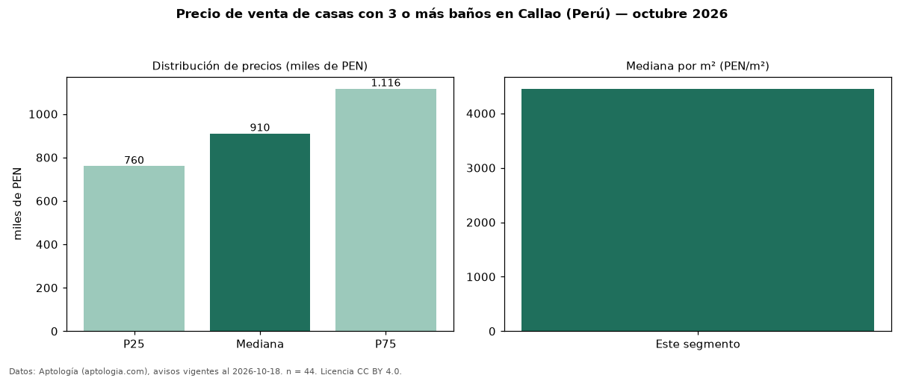

Precio de venta de casas con 3 o más baños en Callao (Perú) — octubre 2026
En Callao (Perú), la mediana de precio de venta de casas con 3 o más baños es PEN 910.000, según 44 avisos vigentes. Eso es 7 % más que la mediana de todas las casas en venta de Callao (PEN 850.000, n = 73); este segmento reúne el 60 % de esos avisos. Por metro cuadrado, la mediana es PEN 4.452/m² (n = 43), 6 % por encima del conjunto de referencia (PEN 4.202/m²). El área mediana anunciada es 205 m². El segmento con más oferta es el de 3 o más habitaciones (44 avisos, mediana PEN 910.000). La mitad central de los avisos va de PEN 759.989 a PEN 1,12 millones (razón 1,5), una dispersión moderada. Datos: Aptología (aptologia.com), CC BY 4.0 — https://www.aptologia.com/pe/venta/callao. Archivos: PDF, CSV con las cifras y gráfica PNG.

| Avisos únicos | 44 |
|---|---|
| Percentil 25 | COP 759.989 |
| Mediana | COP 910.000 |
| Percentil 75 | COP 1.116.262 |
| Mediana por m² | COP 4.452 |
Fuente: avisos vigentes de portales inmobiliarios recopilados por Aptología, deduplicados (mínimo 30 avisos únicos por celda). Precios pedidos, no cerrados. Fecha: 2026-10-18.